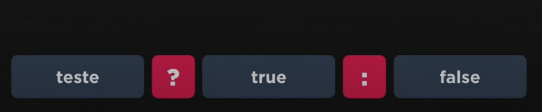
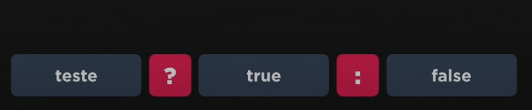

Operador Ternário

Esse operador tem esse nome porque realiza antes um teste lógico e em seguida retornar se verdadeiro ou falso.
Teste ? true : false
Exemplo
média >= 7.0 ? "Aprovado" : "Reprovado"
Esse operador tem esse nome porque realiza antes um teste lógico e em seguida retornar se verdadeiro ou falso.
Teste ? true : false
Exemplo
média >= 7.0 ? "Aprovado" : "Reprovado"